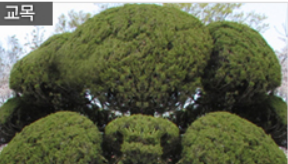

복자여자고등학교 소개
복자여자고등학교는 한국 순교 복자 수녀회에서 참된 진리를 추구하며 이웃을 사랑하고 사회에 봉사하는 여성을 양성하기 위해 설립한 학교입니다.
'참되고 부지런하자, 예모있고 명랑하자'
라는 교훈 아래 몸과 마음이 바르고 건강한 사람,더불어 함께 살아가는 사람,
더불어 함께 살아가는 사람,
자신의 꿈과 비전을 향해 노력하는 사람,
생태회복과 보호를 위해 함께 고민하는 사람,
미래사회의 주역으로서 당당하고 존중받는 민주 시민으로 성장하도록 교육하겠습니다.
꿈을 품은 학생들과 열정과 헌신으로 가르치는 선생님,
그리고 학부모, 지역사회가 함께 만들어가는 행복한 학교 공동체가 되겠습니다.
-곽정아 교장 수녀님 말씀-
복자의 상징

교목 향나무
미사에서 분향은 하느님의 절대성 앞에 흠숭의 예를 드리며 은혜를 청하는
행위로써 절대자 앞에 바치는 제물과 기도의 상징이 되는데 이 때 사용되는 향의
원료가 향나무이다.
교화 장미
사랑과 순결의 꽃말을 담고 있는 장미는 가톨릭에서 기도할 때 바치는 희생과
봉사의 상징적인 꽃으로, 라틴어로 '로사리오'라 불리는 목주의 기도 이름도 장미의
꽃다발에서 비롯된다.
교표
우리 학교의 배지는 둥근원형으로, 중앙 흰 바탕에는 중학교와 고등학교를 알리는 '중', '고'가 들어간다.
원형은 전인교육과 영원한 학교의 발전을 보여주며, 중앙의 흰 바탕은 소박하고
진실함을 상징하고, 자주색의 글자는 순교복자님들의 거룩한 피를 표현했다. 교복:
오시는 길:
주소: 31122 충청남도 천안시 동남구 복자1길 1(성황동) 1Tel: 교무실 (041)551-6002, 행정실(041)551-6001
FAX: 교무실 (041)415-2780, 행정실(041)555-7689
E-mail : bokja6001@gmail.com
- 독서A 이의 있는 사람은 오늘 중으로 교무실에 찾아와주시길 바랍니다.
- 독서B 생기부 마감 12월 29일 8시 20분 까지입니다.
- 독서A 다음시간에 시험 점수 확인 예정입니다.
- 독서A 월요일까지 프린트 23쪽 읽고 24쪽 풀어오세요
- 독서B 2학기에는 환경 독서 프로젝트를 진행할 것 입니다.
환경을 생각하는 마음으로 수업에 임해주시길 바랍니다.
- *긴급 공지*
문학모둠토론발표 수업활동 요약서
제출일: 8/4(수) 0시까지로 연장되었습니다.
마감일까지 잊지말고 꼭 제출해주세요
- 독서B 다음시간까지 '나와 관련된 시'를 재창작해오시길 바랍니다
흰 색 A4용지에 검정색 볼펜만 허용합니다.
색 용지, 색 펜 사용을 금지합니다.
- 문학B 첫 과제^^
문학B 첫 시간의 과제입니다.
'봄'에 관한 시를 창작하여 제출하세요.
텍스트를 리로스쿨에 직접 입력하지 말고,
한글 파일을 만들어 첨부하세요. (제목과 내용만 담습니다.)
다른 학생이 제출한 시를 열람하는 것도 가능합니다.
2021학년도 2학년 독서 알림
- 수학A 복자수학카페 학습지 12월 18일까지
- 수학B 12월 17일 세특 내용 확인할 예정입니다. 모두 꼼꼼하게 읽어보고 오탈자가 있을 경우 저에게 찾아와주시길 바랍니다.
다만, 무리한 수정을 요구하지 말아주시길 바랍니다. 생기부는 선생님의 권한으로 작성하는 것이기 때문에 오탈자 또는 문맥이 이상한 경우에만 수정해드립니다. - 수학B 수행평가 점수확인 및 이의제기
- 복자인 여러분 모두 즐거운 방학을 보내고 있으신가요?
개학식날 복자수학 3번 게시물의 학습지 풀어오세요!
수업시간에 공지한 것과 같이 제풀하지 않을 시 수행평가 감점이 있을 예정입니다.
모두 성실히 참여해주시길 바랍니다.
- 수학A 수행 공지
1학기 수행평가는 수학B 선생님께서 진행해주셔서,
2학기 수행은 수학A에서 진행하기로 결정났습니다.
2학기 수행평가는 총 3회 진행될 것입니다.
자세한 일정은 추후 수업시간에 공지하도록 하겠습니다.
2021학년도 2학년 수학 알림
- 영어B 12월 29일 클래스카드 배틀 예정
- 영어A 수행평가 점수확인 못 한 학생은 오늘중으로 교무실에 들려주시기 바랍니다.
- 영어B 수행평가 미제출자: 2901 김복자, 2920 이복자
위 학생들은 오늘 중으로 제출해주시길 바랍니다.
제출일을 지키지 않았으므로 수행평가에 감정이 있을 예정이오니 참고하시기 바랍니다.
2021학년도 2학년 영어 알림
- 한국사 생기부 12월 30일 까지 확인 바랍니다.
맞춤법검사를 돌리며 문맥에 맞지 않는 단어가 있을 수 있으니 두 눈 크게 뜨고 확인하세요~ - 수행평가 점수확인 못 한 사람들은 선생님께 연락하거나 직접 찾아오시기 바랍니다.
- 1학기 형성평가는 다 폐기하였습니다
2학기 형성평가를 나눠주는 이유는 공부하라는 뜻입니다.
방학동안 공부 열심히 하세요
2021학년도 2학년 한국사 알림
- 산출물 제출일: 11월 17일까지
모두 늦지마세요
- 수행평가 점수확인 내일 점심시간에 진행 예정할 예정입니다.
결석자는 교무실로 따로 찾아오세요. - 생기부 기초자료 제출을 구글 클래스룸에서 12월 23일까지 받습니다.
그 후에 제출하고 싶은 사람은 선생님을 따로 찾아오시기 바랍니다.
2021학년도 2학년 물리 알림
- 생기부 마감 12월 27일 까지입니다.
클래스룸에 양식 올려두었습니다.
pdf로 뜰 경우 선생님을 찾아오세요. - 화학 경시대회 3월 29일 진행 예정입니다.
각 반 반장들은 경시대회 희망하는 학생들을 조사한 뒤 몇 명인지 알려주세요!
2021학년도 2학년 화학 알림
- 생기부 마감 12월 27일 까지입니다.
각 카톡방에 설문 링크를 보냈으니 성실히 응답하여 주시기 바랍니다. - 수행평가 점수확인 12월 19일 예정입니다.
결석자는 선생님을 따로 찾아오시기 바랍니다. - 각 반 반장들은 발표자료를 USB에 모아 선생님에게 가지고 오기 바랍니다.
2021학년도 2학년 생명 알림
- 생기부 마감 12월 27일 까지입니다.
- 수행평가 점수확인 12월 17일 예정입니다.
결석자는 선생님을 찾아오세요. - 발표자는 발표자료를 발표 전 반장에게 보내기 바랍니다.
반장은 발표자료를 모아 제게 주세요.
2021학년도 2학년 지구 과학 알림
- 생기부 마감 12월 27일 까지입니다.
- 수행평가 점수확인 12월 19일 예정입니다.
수행평가 점수에 이의가 있는 사람은 선생님을 찾아오세요 - *발표 수행평가 안내*
발표시에는 5분을 넘기지 않고 5분을 넘길 경우에는 감점이 있겠습니다.
2021학년도 2학년 세계지리 알림
- 생기부 마감 12월 27일 까지입니다.
각 반 단톡방에 양식을 공유하였으니 반장들은 28일 점심시간까지 USB에 수합해 오기 바랍니다. - 수행평가 점수확인 12월 19일 예정입니다.
결석자는 알아서 하세요 가만 두지 않겠습니다.
2021학년도 2학년 정치와 법 알림
- 생기부 기초자료 마감 12월 27일 까지 받겠습니다.
양식은 클래스룸에 있습니다.
모두 늦지 않게 제출하세요. - 수행평가 점수확인 12월 19일 예정입니다.
수행평가는 각각 30% 지필평가는 40%가 반영됩니다.
시헙점수에 좌절하지 마세요.
2021학년도 2학년 생활과 윤리 알림
* 알레르기 정보
1.난류 2.우유 3.메밀 4.땅콩 5.대두 6.밀
7.고등어 8.게 9.새우 10.돼지고기 11.복숭아 12.토마토
13.아황산류 14.호두 15.닭고기 16.쇠고기 17.오징어 18.조개류(굴,전복,홍합 포함) 19.잣
12월 27일 ~ 12월 31일
* 이번주는 야자가 없으므로 석식이 제공되지않습니다.
| 월 | 화 | 수 | 목 | 금 | |
| 12.27 | 12.28 | 12.29 | 12.30 | 12.31 | |
| 중식 | 재량휴업일 | 과일샐러드 1.2.5.6.12. 혼합곡밥 5. 짬뽕국 1.5.6.9.17.18. 버섯불고기 5.6.10.13.18. 배추김치 2.9. 건파래실파무침 5.6.13. 고구마맛탕 5.6.13. |
산채비빔밥/약고추장 1.5.6.10.13.18. 감자양파국 13. 함박까츠 1.2.5.6.10.12.13.15.16.18. 김구이 13. 백김치 9.13. 요구르트 2. 우리밀찹쌀호떡 5. |
치즈생선가스/소스 1.5.6.13. 닭볶음탕 5.6.13.15. 혼합곡밥 5. 불고기볶음면 5.6.10.12.13.16.18. 배추김치 2.9. 라떼 5. |
방학 |
12월 20일 ~ 12월 24일
| 월 | 화 | 수 | 목 | 금 | |
| 12.20 | 12.21 | 12.22 | 12.23 | 12.24 | |
| 중식 | 콩나물김치국 5.9.13. 우엉조림 5.6.13.18. 깍두기 9.13. 인델리카레라이스 2.5.6.10.12.13.16.18. 닭다리구이 15. 청포묵김무침 13. 망고쥬스 |
클로렐라밥 부대찌개 1.2.5.6.9.10.13.15.16. 가자미간장조림 5.6.13.18. 오리불고기 5.6.13.18. 호박새우살볶음 5.9.13. 배추김치 9.13. 한라봉 |
추가밥 오이양파초무침 13. 깍두기 9.13. 쌀국수 5.6.15.16.18. 등심탕수육 1.5.6.10.11.12.13. 팽이버섯양념구이 5.6.12.13. 사과 |
찰현미밥 갈비탕 1.5.6.8.16.18. 물미역/오징어숙회초장 5.6.13.17. 배추김치 9.13. 딸기 크리스마스케이크 1.2.5.6. 고등어양념구이 5.6.7.13. |
날치알김치볶음밥 1.2.5.6.9.10.15.16. 두부숙주샐러드 1.5.6. 단무지무침 계란파국 1. 모듬떡볶이 1.5.6.13. 아이스크림 1.2.5. |
| 석식 | 쫄면야채무침 5.6.13. 시금치나물 해물파전 5.6.9.13.17.18. 배추김치 9.13. 쇠고기당면국 5.6.16. 혼합곡밥 5. |
떡만두국 1.5.6.10.16.18. 중국식가지볶음 5.6.10.12.13.18. 배 스테이크김치그라탕 1.2.5.6.9.10.12.15.16. 모듬장조림 1.5.6.10.13. 깍두기 9. |
혼합곡밥 5. 깍두기 9.13. 감자고추장찌개 5.6.10.13. 등갈비김치찜 5.6.9.10.13. 어묵볶음 1.5.6.13. 무숙채 |
소고기스파게티 1.2.5.6.12.13.16. 마늘빵 2.5.6. 크림스프 2.4.5.6.13.16. 깍두기 9. 오이피클무침 야채샐러드 1.2.5.6. 추가밥 |
없음 |
12월 13일 ~ 12월 17일
| 월 | 화 | 수 | 목 | 금 | |
| 12.13 | 12.14 | 12.15 | 12.16 | 12.17 | |
| 중식 | 스테이크자장면 1.2.5.6.10.12.13.16.18. 무생채 13. 배추김치 9.13. 우유미숫가루 2.5.13. 두부조림 1.5.6.13. 피자파이1.2.5.6 추가밥 |
강황찹쌀밥 과일샐러드 1.2.5.12.13. 섬초무침 허니갈릭파닭 1.2.5.6.13.15.18. 배추김치 9.13. 굴떡국 1.5.6.16. 가지볶음 5.6. |
도토리묵야채무침 5.6.13.18. 오징어오이초무침 5.6.13.17. 배추겉절이 9.13.18. 불고기샌드위치 1.2.5.6.10.13.15.16. 배쥬스 13. 전복삼계탕 15.18. |
찰홍미밥 들깨시락국 5.6. 돼지고기수육/양배추쌈 5.6.10. 무말랭이무침 5.6.13. 코다리엿장조림 4.5.6.12.13. 배추겉절이 9. 아삭이고추된장무침5.6.13. |
장어탕 5.6.13.18. 자장달걀조림 1.2.5.6.13.18. 고추참치덮밥 5.6.12.13. 배추김치 9.13. 딸기 물미역나물 |
| 석식 | 없음 |
없음 |
차수수밥 또띠아 1.2.5.6.13.15.16.18. 열무된장무침 5.6.18. 순대야채볶음 5.6.10.13. 배추김치 9.13. 쇠고기무국 5.6.16. |
새우살야채볶음밥 1.2.5.6.9.10.13.15.16. 치즈돈가스/소스 1.2.5.6.10.12.13.15.18. 양배추맛살샐러드 1.2.5.6.8. 진미채볶음 1.5.6.13.17. 배추겉절이 9. 맑은콩나물국 |
없음 |
12월 6일 ~ 12월 10일
| 월 | 화 | 수 | 목 | 금 | |
| 12.6 | 12.7 | 12.8 | 12.9 | 12.10 | |
| 중식 | 오므라이스 1.2.5.6.10.12.13.16. 총각김치 9.13. 콩나물김치국 5.9. 볶음면 5.6.9.13.17.18. 돈육부추잡채/꽃빵 5.6.10.12.13.18. 섬초무침 |
찹쌀밥 홍합미역국 5.6.18. 한식잡채 1.5.6.8.13.16.18. 한우불고기 2.5.6.8.13.16.18. 배추김치 9.13. 생일축하케익 1.2.5.6.13. 미나리무생채 13. |
주먹밥 13. 어묵우동탕 1.5.6.13.16.18. 깍두기 9.13. 배 함박스테이크/소스 1.2.5.6.10.12.13.15.16. 멘보샤 1.5.6.9.12.13. |
찰흑미밥 돼지국밥 2.5.6.9.10.13.16.18. 감자꽈리고추조림 5.6.13.18. 깍두기 9.13. 콘치즈구이 1.2.5.6.13. 코다리콩나물찜 5.6.13.17. |
북어무우국 5.6.13.18. 짬뽕덮밥 5.6.9.13.17.18. 배추김치 9.13. 연어구이/타르타르소스 1.5.13. 로제떡볶이 1.5.6.12.13. 천혜향 |
| 석식 | 감자수제비국 5.6. 찰보리밥 소시지그린샐러드 2.5.6.10.13.15.18. 청포묵김무침 5.13. 제육볶음 5.6.10.13. 총각김치 9.13. |
라떼 5. 꼬막야채비빔밥 5.6.13.16.18. 치즈돈가스/소스 1.2.5.6.10.12.13.18. 배추김치 2.9. 건파래볶음 5.13. 단마토 12. |
없음 | 없음 | 없음 |
| 대의원회의 내용 전달 |
|
|---|---|
|
11월 26일
|
<대의원회의 결의사항> - 큐빅과 연장하지 않은 선에서 네일아트 허용 - 탈색한 머리에서 다시 염색하는 것은 허용하지 않음 <학생회 안내사항> - 급식실 롱패딩 착용 금지(안전상의 이유) - 이미 염색, 탈색한 친구들은 이후에 하지 않으면 됩니다. <훈화전달> - 체육복은 체육시간에만 착용가능 |
|
11월 23일
|
<대의원회의 결의사항> 안녕하세요. 58대 학생회장 이원진입니다. 이번주 26일 금요일 8교시에 강당에서 대의원회의가 열릴 예정입니다. 이번 대의원회의 안건은 저번 회의의 연장선으로 저번 회의에서 투표로 결정된 사항에 대해서 각 반에서 동의하는지 투표하여 결과를 가져오시면 됩니다. 대의원회의는 각 반 학생들이 모여 함께 이야기를 나누는 회의입니다. 회의에 참여하지 않으면 진행상황에 대하여 알기 어려우니 꼭 회의에 참석해주시시 바랍니다. 개인 사정으로 어려운 분 또한 대타를 구해 대의원회의에 각 반 2명이 참여할 수 있도록 해주시기 바랍니다. <지난 회의 결정사항> - 머리: 탈색을 제외한 모든 염색 허용 - 손톱: 연장 금지(위생, 안전상의 이유로 금지), 큐빅을 제외한 색있는 네일 가능 - 피어싱: 개수 상관 없이 귀에 딱 붙는 귀걸이(안전상의 이유), 큐빅 가능, 달랑거리거나 긴 귀걸이 금지 - 타투: 금지 |
|
10월 22일
|
<공지사항> 이번 대의원회의 안건은 '용의용모 규정 설문조사를 토대로 새 용의용모 규정 만들기'입니다. 염색, 네일의 경우 부분허용이라는 단어가 애매한 부분이 많아 염색 및 네일의 부분허용 범위를 정하려고합니다. 예를 들어 '염색의 경우는 어두운 갈색(자연갈색)까지, 네일은 투명한 탑코트까지'와 같이 구체적인 범위를 각 반의 의견을 모아 정해주시기 바랍니다. 범위를 정할 때 학부모님과 선생님들의 의견까지 고려하여 결정해주시기 바랍니다. |
|
9월 14일
|
<공지사항> - 교내에서 배달 음식 시켜먹기 금지 - 마리아홀 분리수거 잘하기 - 각 반 분리수거통 앞에 비치된 분리수거표 확인하고 분리배출하기 - 교복 착용 시 리본 잘 챙기기, 치마 길이는 무릎선 - 체육복 착용은 체육 시간에만! - 타투 금지 - 피어싱 등의 액세서리-> 불쾌감주는 것은 피하기 - 사복은 등하교시에는 상관없지만 교내에서는 입지 말기 |
| 시간 | 교시 |
|---|---|
| 8:30 ~ 8:50 | 명상의 시간 및 조례 |
| 8:50 ~ 9:40 | 1교시 |
| 9:50 ~ 10:40 | 2교시 |
| 10:50 ~ 11:40 | 3교시 |
| 11:50 ~ 12:40 | 4교시 |
| 12:40 ~ 1:50 | 점심시간 |
| 1:50 ~ 2:40 | 5교시 |
| 2:50 ~ 3:40 | 6교시 |
| 3:50 ~ 4:40 | 7교시 |
| 4:40 ~ 5:10 | 청소시간 |
| 5:10 ~ 6:00 | 8교시 |
| 6:00 ~ 6:50 | 저녁 시간 |
| 6:50 ~ 7:50 | 9교시 |
| 8:00 ~ 9:00 | 10교시 |
| 장미 | 월요일 | 화요일 | 수요일 | 목요일 | 금요일 |
|---|---|---|---|---|---|
| 1교시 | 한국사 | 수학A | 문학B | 영어A | 수학B |
| 2교시 | A | B | E | D | 독서토론 |
| 3교시 | 문학A | 고전문학감상 | 영어A | 문학A | 한국사 |
| 4교시 | C | F | A | B | 교양 선택 |
| 5교시 | 문학B | 수학B | 수학A | 영어B | 창체 |
| 6교시 | E | D | C | F | 창체 |
| 7교시 | 미술 감상 비평 | 영어B | 스포츠 생활 | 창체 | 창체 |
| 백합 | 월요일 | 화요일 | 수요일 | 목요일 | 금요일 |
|---|---|---|---|---|---|
| 1교시 | 스포츠 생활 | 영어B | 한국사 | 문학B | 고전문학감상 |
| 2교시 | A | B | E | D | 독서토론 |
| 3교시 | 문학B | 영어A | 문학B | 수학B | 영어B |
| 4교시 | C | F | A | B | 교양 선택 |
| 5교시 | 문학A | 수학A | 수학B | 수학A | 창체 |
| 6교시 | E | D | C | F | 창체 |
| 7교시 | 한국사 | 미술 감상 비평 | 영어A | 창체 | 창체 |
| 난초 | 월요일 | 화요일 | 수요일 | 목요일 | 금요일 |
|---|---|---|---|---|---|
| 1교시 | 미술감상과 비평 | 한국사 | 스포츠 생활 | 수학B | 한국사 |
| 2교시 | A | B | E | D | 독서토론 |
| 3교시 | 수학B | 문학A | 고전문학감상 | 수학A | 수학A |
| 4교시 | C | F | A | B | 교양 선택 |
| 5교시 | 영어A | 영어A | 영어B | 문학B | 창체 |
| 6교시 | E | D | C | F | 창체 |
| 7교시 | 영어B | 문학B | 문학A | 창체 | 창체 |
| 매화 | 월요일 | 화요일 | 수요일 | 목요일 | 금요일 |
|---|---|---|---|---|---|
| 1교시 | 영어A | 고전문학감상 | 수학B | 영어B | 문학A |
| 2교시 | A | B | E | D | 독서토론 |
| 3교시 | 영어B | 한국사 | 문학B | 한국사 | 영어A |
| 4교시 | C | F | A | B | 교양 선택 |
| 5교시 | 수학A | 미술 감상 비평 | 체육 | 수학B | 창체 |
| 6교시 | E | D | C | F | 창체 |
| 7교시 | 문학B | 문학A | 수학A | 창체 | 창체 |
| 국화 | 월요일 | 화요일 | 수요일 | 목요일 | 금요일 |
|---|---|---|---|---|---|
| 1교시 | 영어B | 문학B | 영어A | 문학A | 스포츠 생활 |
| 2교시 | A | B | E | D | 독서 토론 |
| 3교시 | 수학A | 수학B | 영어B | 문학B | 고전문학감상 |
| 4교시 | C | F | A | B | 교양 선택 |
| 5교시 | 미술 감상 비평 | 한국사 | 문학A | 한국사 | 창체 |
| 6교시 | E | D | C | F | 창체 |
| 7교시 | 영어A | 수학A | 수학B | 창체 | 창체 |
| 모란 | 월요일 | 화요일 | 수요일 | 목요일 | 금요일 |
|---|---|---|---|---|---|
| 1교시 | 수학B | 수학B | 수학A | 수학A | 미술 감상 비평 |
| 2교시 | A | B | E | D | 독서토론 |
| 3교시 | 한국사 | 문학B | 한국사 | 고전문학감상 | 스포츠 생활 |
| 4교시 | C | F | A | B | 교양 |
| 5교시 | 영어B | 문학A | 문학B | 영어A | 창체 |
| 6교시 | E | D | C | F | 창체 |
| 7교시 | 문학A | 영어A | 영어B | 창체 | 창체 |
| 이화 | 월요일 | 화요일 | 수요일 | 목요일 | 금요일 |
|---|---|---|---|---|---|
| 1교시 | 문학A | 영어A | 고전문학감상 | 한국사 | 문학B |
| 2교시 | A | B | E | D | 독서 토론 |
| 3교시 | 영어A | 영어B | 수학A | 영어B | 수학B |
| 4교시 | C | F | A | B | 교양 선택 |
| 5교시 | 스포츠 생활 | 문학B | 한국사 | 문학A | 창체 |
| 6교시 | E | D | C | F | 창체 |
| 7교시 | 수학A | 수학B | 미술 감상 비평 | 창체 | 창체 |
| 동백 | 월요일 | 화요일 | 수요일 | 목요일 | 금요일 |
|---|---|---|---|---|---|
| 1교시 | 문학B | 문학A | 영어B | 스포츠 생활 | 수학A |
| 2교시 | A | B | E | D | 독서토론 |
| 3교시 | 고전문학감상 | 수학A | 수학 | 영어A | 문학A |
| 4교시 | C | F | A | B | 교양선택 |
| 5교시 | 한국사 | 영어B | 영어A | 미술 감상 비평 | 창체 |
| 6교시 | D | E | C | F | 창체 |
| 7교시 | 수학B | 한국사 | 문학B | 창체 | 창체 |

3월 학사 일정
01일 : 삼일절
02일 : 개학,입학식
03일 : 1학년 OT(5,6,7)
04일 : 1학년 OT(5,6,7) ②③ 어울림교육(7)
05일 : ①기초학력평가(1-3) OT(5,6,7) ②③독서(2) 창의주제활동 안내(5) 진로(6) 어울림교육(7)
11일 : 신입생 환영미사(중-고) 재난안전교육(7)
12일 : 독서(2) 봉사소양교육(5) 동아리(7) ①민주시민교육(6) ②③학급활동(6)
18일 : ①학급활동(7) ②③민주시민교육(7)
19일 : 독서(2) ①범교과학습(5,6,7) ②③창의주제활동(5,6,7)
23일~25일 : ① 전국연합학력평가
25일 : ①② 학생부 교육
26일 : 독서(2), 동아리(5,6,7)

4월 학사 일정
01일 : 부활계란 꾸미기(7)01일 : 부활계란 꾸미기(7)
02일 : 부활절 재량휴업
08일 : 학교폭력 예방교육
09일 : 독서(2) ① 진로안내(5) 진로탐색(6,7) ②③ 학급활동(5) 동아리(6,7)
14일 : ③ 전국연합학력평가
15일 : 생활안전교육(7) (교) 교사관련 전교사 연수
16일 : 독서(2) ①범교과학습(5,6,7)
22일 : 인권교육(7)
23일 : 독서(2) ① 진로안내(5) 진로탐색(6) ②③ 창의주제(5,6) (교) 저학공모임 (7)
26일~30일 : 종합검사(26일~30일)
29일~05월04일 : 1회고사
30일~05월04일 : 1회고사

5월 학사 일정
04일 : 1회고사
05일 : 어린이날
06일 : ① 아동학대 가정폭력예방(7) ②③ 학급활동(7)
07일 : ① 독서(2) ① 봉사활동(5), 창의주제(6,7) ②③현장체험학습 (1-7)
13일 : ① 학급활동(7) ②③ 학생부교육(7)
14일 : ②③ 독서(2) ① 현장체험학습(1-7) ②봉사활동(5) 창의주제(6,7) ③부채만들기(5,6,7)
19일 : 부처님 오신날
20일 : 성모의 밤
21일 : 독서(2) ①② 나눔장터(5) ③봉사(5) 동아리(6,7)
27일 : 생활안전교육
28일 : 독서(2) ①와이즈멘토(5,6) ②봉사(5) 창의주제(6) ③창의주제(5,6) 전학공모임(7)

6월 학사 일정
03일 : 전국연합학력평가
04일 : 독서(2) ①② 나눔장터(5) 동아리(6,7) ③ 봉사(5) 동아리(6,7)
06일 : 현충일
10일 : (교) 공개수업 교통안전교육(7)
11일 : 독서(2) ① 와이즈멘토 (5,6) 진로독서(7) ②진로독서(5,6) 진로설계(7) ③ 창의주제(5,6) 학급회의(7)
12일 : 1차 인성캠프(당일 피정)
17일 : 생명존중교육(7)
18일 : 독서(2) ① 봉사활동(5) 창의주제(6,7) ② 학급활동(5) 진로직업체험(6,7) ③진로디자인(5,6,7)
24일 : 약물오남용예방교육(7)
25일 : 독서(2) ① 창의주제(5,6) 학급친교활동(7) ②③ 창의주제(5,6,7)
28일~07월02일 : 2회고사

7월 학사 일정
01일~02일 : 2회고사
02일 : 2회고사
07일 : ③ 전국연합학력평가
08일 : ① 환경정화활동(7) ②③ 학급활동(7)
09일 : 독서(2) ① 교육과정안내 (5,6) 진로설계(7) ②메타인지(5,6,7) ③ 창의주제(5,6,7)
15일 : ①② 나눔장터(7) ③환경정화(7)
16일 : ①② 나눔장터(1,2,3) ③ 창의주제(1,2,3) 방학식(4)

8월 학사 일정
17일 : 개학
19일 : 생명존중교육(7)
20일 : 독서(2) ①선배와의 만남(5,6,7) ②학급활동(5) 진로특강(6,7) ③학급활동(5) 진로디자인(6,7)
27일 : 독서(2) ① 창의주제(5) 동아리(6,7) ②③ 봉사활동(5) 동아리(6,7)
31일 : 1, 2학년 전국학력평가

9월 학사 일정
02일 : 학급활동(7)
03일 : 독서(2) ① 진로특강(5,6) 동아리(7) ② 진로직업체험(5,6) 동아리(7) ③ 진로디자인(5,6) 동아리(7)
09일 : 교통안전교육(7)
10일 : ①③ 독서(2) ① 범교과(5,6,7) ② 진로직업체험(1-7) ③ 창의주제(5,6,7) 수시원서접수 (10~14)
14일 : (교) 공개수업
16일 : 개교기념미사 전학공모임(7)
17일 : 개교기념일재량휴업
20일 ~ 22일 : 추석연휴
23일 : 성교육, 가정폭력 예방(7)
24일 : 독서(2) ①학급친교(5) 동아리(6,7) ②③ 진로활동(5) 동아리(6,7)
30일 : 학교폭력 예방교육(7)

10월 학사 일정
01일 : 독서(2) 봉사(5) 창의주제(6) (교)전학공모임(7)
04일 : 대체공휴일
05일~08일 : 1회고사
09일 : 한글날
11일 : 대체공휴일
12일 : ③ 전국연합학력평가 ①② 현장체험학습(1-7)
14일 : 도박예방교육(7)
15일 : 독서(2) SW교육의 날(5,6,7)
16일 : 2차 인성캠프 (성지순례)
21일 : 올바른 한글 사용(7)
22일 : 독서(2) 학급활동(5) 동아리(6,7)
28일 : 생활안전교육(7)
29일 : 복자문학제(1-7)
30일 : 교직원 성지순례

11월 학사 일정
04일 : (교) 전학공모임(7)
05일 : 독서(2) ① 창의주제(5) 동아리(6,7) ② 진로직업체험후속(5) 동아리(6,7)
11일 : 사이버중독예방(7)
12일 : 독서(2) ①범교과학습(5,6,7) ② 책숲 발표(5,6) 환경정화활동(7) ③목도리뜨기봉사(5,6,7)
17일 : 수능 감사미사
18일 : 대학수학능력시험
19일 : 독서(2) ① 씨앗책 발표(5,6) 동아리(7) ②창의주제 발표(5,6) 동아리(7) ③ 목도리뜨기봉사(5,6) 동아리(7)
24일 : ①② 전국연합학력평가
25일 : 세례식 안전교육(7) 학교설명회
26일 : 독서(2) ①창의주제(5,6) 동아리(7) ②진로활동(5,6) 동아리(7)

12월 학사 일정
02일 : (교)전학공모임(7)
03일 : ① 창의주제(2) 학급활동(5) 동아리(6,7)
08일~14일 : 2회고사
16일 : 생활안전교육(7)
17일 : ①창의주제(2) 동아리(5,6,7) (부장교사) 교육과정평가회
21일 : 구유축복식
23일 : 성탄 사랑 나눔, 재난안전교육(7)
24일 : 성탄절 재량휴업
25일 : 성탄절
27일 : 재량휴업
28일 : 학술제
29일 : 학예 발표회
30일 : 방학식 재난안전 교육
31일~01월03일 : 정시모집(30~1.3)

1월 학사 일정
21일 : (교)신부장회의
24일 : 개학식
26일 : 졸업미사
27일 : 졸업식
28일 : 재난안전교육(3) 방학식
31일~02월02일 : 설날연휴
24일 : 개학식

2월 학사 일정
01일~02일 : 설날연휴
02일 : 설날연휴
17일 : (교) 전교사연수
18일 : (교) 전교사연수
비닐
- 1회용 비닐봉투, 복합 필름류(과자봉지, 빵봉지, 라면봉지, 커피봉지, 음료수 파우치 등)
<분리 배출 방법>
- 음식물 등 이물질이 묻지 않게 깨끗한 상태로 말려서 배출
<재활용 불가품목>
- 이물질이 묻은 경우 또는 비닐 장판의 경우는 종량제 봉투에 배출
유리병
- 드링크병, 음료수병 등
<분리 배출 방법>
- 병 뚜껑 제거, 내용물을 비우고 깨끗하게 배출
- 담배꽁초 등 이물질 반드시 제거
<재활용 불가품목>
- 거울, 도자기류, 깨진 유리, 화분 등은 매립용 마대(녹색)에 담아 배출
종량제
- 이물질이 묻은 경우, 코팅된 종이, 작은 플라스틱, 펌프 용기, 칫솔, 비닐랩, 문구류, 완구류 등
<재활용 불가용품>
-음식물(동물이 먹을 수 없는것 제외)
-비닐(커피믹스, 라면, 과자 및 빵봉지, 한약팩)
-종이팩(책, 상자 등의 일반 폐지와 다름)
-형광등, 전구(깨진 형광등 제외)
-플라스틱
종이류
- 신문지, 책, 공책, 각종 종이상자 등
<분리 배출 방법>
- 물기에 젖지 않도록 하고 차곡차곡 쌓은 후 묶어서 배출
- 비닐 코팅 부분, 플라스틱, 철사 등 오물 제거 후 깨끗하게 배출
- 종이팩은 일반 폐지와 구분하여 별도 배출
<재활용 불가용품>
- 비닐 코팅 종이류, 1회용 기저귀, 사진, 사용된 휴지 등은 소각용 종량제 봉투에 넣어 배출
* 책, 큰 상자는 분리수거장으로 갖고와주세요
* 빨대 및 비닐은 따로 분리하여 버려주세요.
종이팩
- 우유팩, 두유팩, 쥬스팩 등
<분리 배출 방법>
- 내용물을 비우고 물로 헹군 후 반드시 일반 폐지와 구분하여 배출
<재활용 불가용품>
- 이물질이 들어있는 종이책은 소각용 종량제 봉투에 넣어 배출
캔
- 철캔, 알루미늄캔, 부탄가스통, 살충제 용기, 철판, 스테인레스, 샤시, 알루미늄 등
<분리 배출 방법>
- 내용물을 비우고 최대한 압착 후 배출
- 겉 또는 속의 플라스틱 뚜껑, 이물질 등 제거
- 가스통, 살충제통 등은 구멍을 뚫어 배출
<재활용 불가용품>
- 페인트통, 폐유통 등 유해성 포장통은 지정폐기물 수거업체를 통해 배출
플라스틱
- PET, PVC, PP, PS, PE, PSP(HDP, LDP)
<분리 배출 방법>
- 플라스틱에 부착되이있는 이물질(스티커, 테이프, 라벨 등) 제거 후 깨끗하게 배출
<재활용 불가용품>
- 식기류 등 복합 재질, 문구류, 완구류, 강화(내열)플라스틱, CD, 카세트 테이프 등은 종량제 봉투에 배출
*빨대 및 비닐은 따로 분리하여 버려주세요
메이커실 예약
복자여자고등학교의 메이커실은 마리아홀 건물 1층에 위치합니다.
학생들이 자율적으로 주제 탐구를 진행 할 수 있도록 장비를 마련해둔 공간입니다.
메이커실 이용을 원하신다면 하단에 학번, 이름과 함께 원하시는 날짜와 시간대를 입력한 후 제출해주세요.
과학실 예약
복자여자고등학교의 과학실은 마리아홀 건물 2층에 위치합니다.
물리실, 화학실, 생물실, 지구과학실로 총 4개가 있습니다.
학생들이 자율적으로 실험을 진행 할 수 있도록 장비를 마련해둔 공간입니다.
과학실 이용을 원하신다면 하단에 학번, 이름과 함께 원하시는 날짜와 시간대를 입력한 후 제출해주세요.
3D 프린터기 사용 예약
복자여고의 3D 프린터기는 마리아홀 1층에 위치한 메이커실에 있습니다.
3D 프린터기 사용 방법은 2층교무실의 나준영 선생님께 질문하시면 친절하게 답해주실겁니다.^^
3D 프린터기의 개수는 1개로 다른 학생들이 이용 중일 경우 사용하실 수 없습니다.
3D 프린터기 이용을 원하신다면 하단에 학번, 이름과 함께 원하시는 날짜와 시간대를 입력한 후 제출해주세요.